Pentest 0x01 - Information Gathering Pt 1
Sumário
Escrito por: Mateus Gualberto (Midnight Reverser) - orgulho de escrever sem IA envolvida no processo!
Licença: livre, como todo conhecimento deve ser.
Introdução#
E prosseguimos na jornada rumo à eJPT! Agora, vamos ver como prosseguir nas atividades após o firmamento de um contrato de pentest.
Information Gathering#
A primeira etapa técnica de um Pentest é a busca de mais informações sobre o alvo, também chamada de Information Gathering (que também é chamada/engloba a fase de Enumeração, em algumas literaturas). Um pentest de sucesso tem sua base em uma boa coleta de informações do alvo, sendo esses tipos de informação os mais diversos possíveis: IPs, domínios, softwares, e-mails, senhas, trabalhos, pesquisas, pessoas, organização da empresa etc.
É essa a fase que mais se gasta tempo, e também é a que constrói a base para as fases posteriores, portanto, invista um tempo considerável apenas pesquisando pelo seu alvo. Sabemos que um aprendiz sempre irá buscar por mais “ação” e querer logo infectar o sistema, pegar uma reverse shell e ownar o AD, mas tentar realizar essas ações sem planejamento, busca e mapeamento de informações e ativos da rede pode trazer problemas nas próximas fases.
Ao finalizar essa fase, o pentester terá mapeado a superfície de ataque da companhia contratante, ou seja, terá a visão de um atacante externo com relação às informações disponíveis.
Como saber o que é importante a pesquisar? Só é possível saber se algo será utilizado ou não no Pentest quando realmente for, logo, anote e armazene o máximo de informações encontradas, mesmo que elas possam não fazer sentido nessa fase. É melhor sobrar do que faltar :)
E por onde começamos a pesquisar? Bem, antes de sabermos como, o quê, e onde pesquisarmos, é importante separarmos a busca de informações em dois tipos: passiva e ativa. Saber diferenciá-las é vital para certos tipos de atividades e contratos que requerem uma ação mais furtiva ou agressiva, entretanto, note que muitas vezes uma determinada ação pode ser considerada um misto de passive com active.
Passive Information Gathering#
A busca de informações de forma passiva é aquela realizada sem interação direta com o alvo. Pensando de forma mais estrita, isso não permitiria nem acessar o website institucional do alvo, apenas utilizar ferramentas de terceiros para acessá-lo. Entretanto, há literaturas que definem Passive Information Gathering de forma menos restritiva, permitindo ao profissional que realize ações de um usuário comum. Por exemplo, se o alvo é um e-commerce, realizar um cadastro, login e pesquisar por produtos são ações de clientes, que não devem levantar suspeitas por partes de tecnologias ou times de segurança.
Open Source Intelligence (OSINT) é um outro nome dado a essa procura passiva, baseada em fontes abertas, como sites de emprego, pesquisas publicadas sobre tecnologias, linkedin, histórico de DNS, tecnologias utilizadas na construção do site e servidores, entre outras fontes na vastidão da Internet. Devido à globalização, até mesmo pequenas empresas marcam presença na Internet, permitindo que existam rastros, ou “pegadas” que podem ser utilizadas para nosso engajamento ofensivo.
É importante notar que, devido à sua natureza passiva, essa etapa não gera alertas ou investigações de times de segurança, pois não há interação direta com o alvo. Logo, é a forma mais furtiva de obter informações e que pode ser utilizada sem problemas quanto a essas questões.
Dito isso, abaixo estão descritas algumas ferramentas que podem ser utilizadas para a realização de Passive Information Gathering.
Ferramentas e plataformas para Passive Information Gathering#
Informações de IPs e domínios#
Mapear o máximo possível de hosts, intervalos de endereços, subdomínios com IPs existentes (ou não mais gerenciados, suscetíveis a Subdomain Takeover) irá fornecer a superfície de ataque para descoberta de vulnerabilidades e configurações erradas em serviços, que serão fundamentais nas próximas fases do pentest.
whois#
whois é um protocolo e também uma ferramenta que permite requisitar por informações do registrante do domínio, nameservers, e-mails do responsável pelo domínio e da empresa que disponibilizou para registro etc. A ferramenta já vem instalada por padrão no Kali Linux.
Abaixo estão algumas imagens contendo os resultados do whois para o domínio midnighthackings.com:
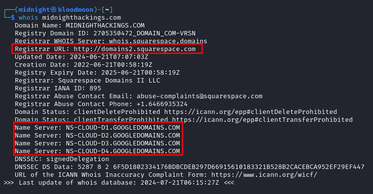 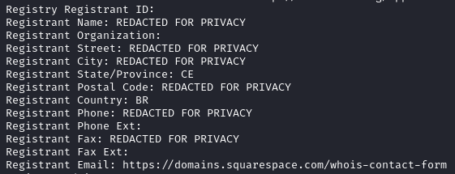Note que já podemos inferir algumas coisas sobre o domínio midnighthackings.com:
- O registro foi feito pelo provedor de domínios Squarespace (linha do Registrar URL);
- Os nameservers são do google. Nameservers são servidores DNS que irão armazenar os registros do domínio, bem como traduzir os nomes dos subdomínios requisitados para os IPs respectivos;
- Não é possível saber a maior parte das informações de quem registrou o domínio devido ao uso do serviço whois privacy/domain privacy. Entretanto, o país/estado estão públicos.
Também é possível realizar o whois por plataformas webs que fornecem um cliente para o serviço. Abaixo estão alguns deles:
- https://who.is/
- https://viewdns.info/whois/
- https://www.iana.org/whois
- https://registro.br/tecnologia/ferramentas/whois/
A evolução do whois é o protocolo RDAP, que permite, entre outros recursos, domínios internacionalizados e uma padronização nos campos retornados. Pesquise via RDAP por esse link.
Intervalo de endereços#
Também é possível encontrar alguns IPs quando se pesquisa por um domínio - por exemplo, o IP dos nameservers. Realizar um whois para qualquer um desses IPs deve resultar nas informações da empresa que distribuiu esses IPs, bem como os intervalos de blocos que foram alocados para a empresa contratante. Dessa forma, é possível reunir possíveis hosts para uso futuro.
Curiosidade: os blocos de IPv4 e as Autonomous System Numbers (ASNs) do mundo são distribuídos pela organização Internet Assigned Numbers Authority (IANA) para as diversas regiões do mundo pelas Regional Internet Registry (RIR), que as distribuem para os países e outras subdivisões. Abaixo está uma lista das RIRs e suas respectivas regiões.
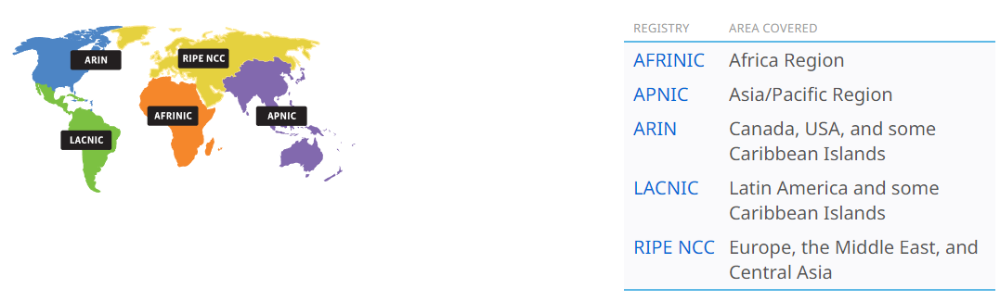
Passive DNS#
O DNS é um dos protocolos mais importantes da Internet, e é o responsável (principalmente) por responder requisições de resolução de nomes para IPs. Quando se aluga um domínio, é possível alterar as informações DNS a partir da plataforma contratada, que geralmente contém um nameserver próprio para uso dos clientes.
Vejamos alguns tipos de informação DNS:
- A - registro IPv4; mapeia um nome para um endereço;
- AAAA - registro IPv6; mapeia um nome para um endereço;
- MX - armazena a informação sobre o servidor de e-mail do domínio;
- CNAME - permite realizar um alias (apelido) para um nome, permitindo acessar um host qualquer - inclusive de um domínio diferente - através de um alias do domínio que possui. Exemplo de uso: CNAME blog.midnighthackings.com é um alias para midnight-rev.github.io;
- PTR - permite realizar reverse lookups - o processo de buscar os nomes atribuídos a um IP;
- SOA - contém informações administrativas e úteis para realizar transferências de zona;
- TXT - pode ser utilizado para diversos fins; o mais comum é para realizar verificação do domínio - “se você possui tal domínio, crie um registro TXT com esse nome e valor”.
O banco de dados de um servidor DNS é chamado de zone file e contém todos os registros (públicos e não públicos), sendo uma excelente fonte para o mapeamento da rede interna - caso exista um servidor malconfigurado! No próximo artigo veremos como podemos obter esse arquivo com zone transfer. Por enquanto, vamos nos ater a ferramentas que irão verificar o DNS de forma passiva para nós:
DNSDumpster#
O DNSDumpster é uma plataforma que armazena o histórico DNS e é gratuita para buscas. Dentre os principais recursos, há o mapeamento dos blocos de IP no mapa terrestre, busca de nameservers, os registros (MX, TXT etc), serviços e portas abertas em hosts, além de um mapeamento em grafo. Entretanto, há um problema particular: essa ferramenta traz o histórico, uma foto do passado, que pode não refletir o presente.
Vejamos o resultado do DNSDumpster para o domínio midnighthackings.com:
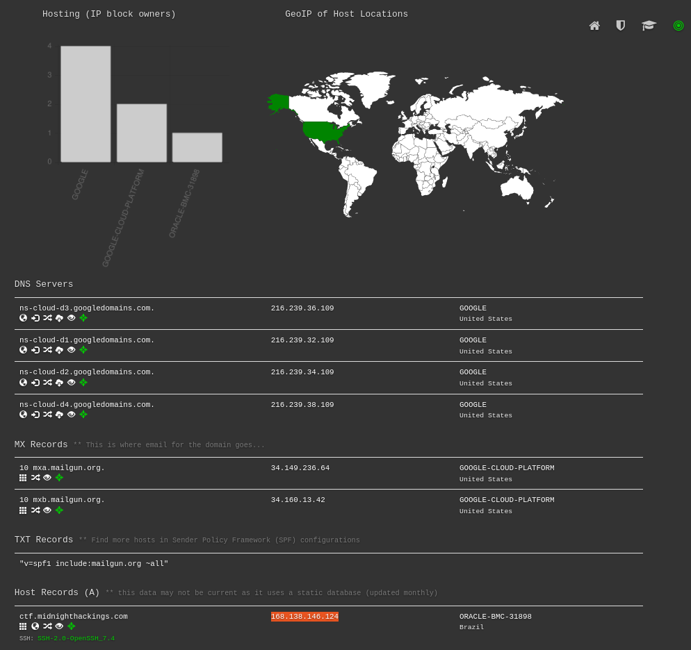Note, na imagem acima, que a plataforma identificou um host, ctf.midnighthackings.com que estava, na data do scan do DNSDumpster, com o serviço SSH exposto com versão 7.4.
Abaixo está um exemplo da visão de grafo do mapeamento do domínio.
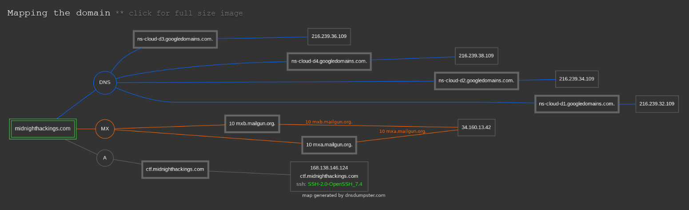sublist3r#
sublist3r é uma ferramenta que realiza uma busca passiva DNS em um domínio, tentando encontrar subdomínios. Isso é feito a partir de requisições para plataformas de busca, como o google, virustotal e yahoo. Dessa forma, não há contato direto do pentester com o alvo, mas pode haver bloqueios de certos provedores devido à enorme quantidade de requisições realizadas - use com cautela!
No Kali Linux, utilize o comando abaixo para instalar o sublist3r.
sudo apt update -y; sudo apt install sublist3r -y
O uso mais simples do sublist3r está expresso na imagem abaixo, passando o domínio via opção -d:
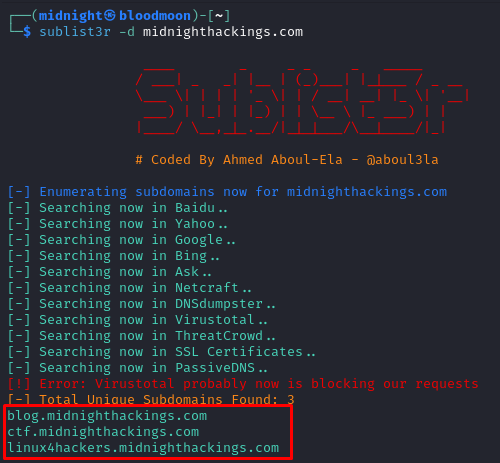Nesse caso, foram realizadas requisições para diversas engines de busca e houve retorno de 3 subdomínios: blog.midnighthackings.com, ctf.midnighthackings.com e linux4hackers.midnighthackings.com. Não é possível saber quais serviços estão disponíveis nesses subdomínios - ou até mesmo se eles estão ativos ainda - mas já são potenciais alvos para um scan nas próximas fases.
A ferramenta também possui o recurso de bruteforce DNS, porém isso se enquadraria em busca de informações de forma ativa.
Web#
A web é regida pelos protocolos HTTP/HTTPS e é um dos protocolos mais utilizados, juntamente com o DNS. A maior parte das empresas e organizações têm um site institucional ou de e-commerce. No sentido de busca de informações de forma passiva, admitiremos o contato direto do pentester com o site de forma “natural” - como um cliente. Por exemplo, se é um site de e-commerce, o pentester poderá se cadastrar, fazer login, pesquisar por produtos, entre outras ações comuns.
Algumas informações que sites podem conter: tecnologias utilizadas para construção do frontend/backend, páginas administrativas, arquivos de backup expostos, credenciais e comentários com dados sensíveis no código-fonte.
Netcraft#
Netcraft é uma plataforma que traz diversas informações sobre um site/subdomínio, como tecnologias utilizadas, vulnerabilidades, entre outras.
Vejamos os resultados para o blog.midnighthackings.com:
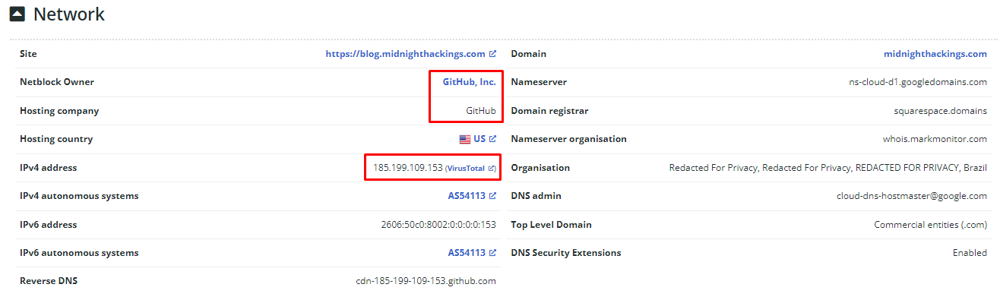Pode ser destacado, na imagem acima, que o site https://blog.midnighthackings.com é hospedado pelo Github. Dado que o subdomínio tem a palavra blog escrita, é possível inferir que o serviço HTTP que roda nele é uma página de blog e hospedada gratuitamente via Github Pages, sendo um site estático.
O Netcraft também traz algumas informações sobre vulnerabilidades no SSL já conhecidas, mas nenhuma delas retornou como vulnerável.
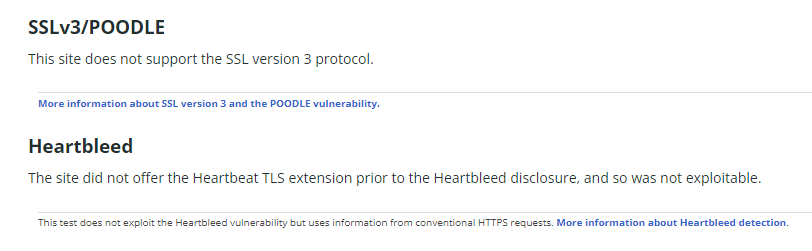Também é possível saber qual o software que compôs o site: Hugo CMS. Esse é um gerador de sites estáticos a partir de arquivos Markdown.
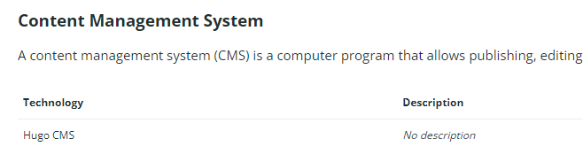Para o leitor, recomendo que faça o mesmo para o ctf.midnighthackings.com e o linux4hackers.midnighthackings.com
Tecnologias#
As tecnologias podem demonstrar quais softwares são mais utilizados para a construção dos sites da empresa, e isso pode levar a dois pontos principais para o pentester:
- vulnerabilidades a serem exploradas;
- uso das tecnologias como forma de phishing, como e-mails falsos de atualização dos pacotes.
Wappalyzer#
Wappalyzer é uma extensão para navegador que, ao acessar uma página, permite identificar as tecnologias que a construiram.
Abaixo estão os resultados para blog.midnighthackings.com. Alguns pontos interessantes:
- a Content Delivery Network, que se encarrega da disponibilidade do site ao redor do mundo, é a Fastly;
- o gerador de sites é o hugo e a plataforma que hospeda é o Github Pages - corroborando para o resultado no Netcraft;
Para o leitor, recomendo que faça o mesmo para o ctf.midnighthackings.com e o linux4hackers.midnighthackings.com
whatweb#
whatweb é uma ferramenta disponível no Kali Linux que irá fazer um trabalho semelhante ao que o Wappalyzer realiza. É mais um aliado que trará alguns resultados extras mais específicos, como o que encontrar no conteúdo da página.
Vejamos o resultado para os três subdomínios que encontramos:
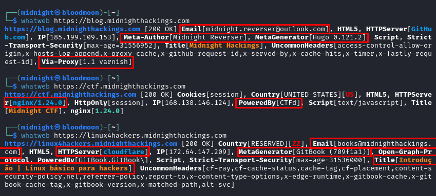Alguns pontos a serem destacados:
- blog.midnighthackings.com
- Foi encontrado o e-mail midnight.reverser@outlook.com na página, o que já pode ser utilizado para ataques de brute-force, password-spray, email spoof ou phishing;
- Foi possível verificar o nome do autor do blog (Midnight Reverser) e a versão exata do hugo (0.121.2);
- Também há possivelmente um Proxy Reverso para aceleração de conteúdo, o Varnish na versão 1.1.
- ctf.midnighthackings.com
- O site está rodando no servidor nginx/1.24.0;
- O site pode ter sido contruído utilizando o projeto opensource CTFd, que permite criar sites para eventos de CTF - desafios em segurança da informação.
- linux4hackers.midnighthackings.com
- Há um novo e-mail encontrado: books@midnighthackings.com;
- Ao que parece, o site está por detrás da Cloudflare, um provedor estadunidense que provê vários serviços, dentre eles: Web Application Firewall (WAF), que proteje sites, e anonimização do IP original do servidor a partir do uso do WAF;
- O gerador de conteúdo é o Gitbook, logo podemos inferir que o propósito desse subdomínio é de apresentar um livro, um manual ou documentação de algo;
- Por fim, temos o título Introdução | Linux básico para hackers, que podemos inferir que é um livro com base em tudo que encontramos sobre esse subdomínio.
WayBack Machine#
Sites são vivos e dessa forma quero me referir a mudanças. Elas ocorrem ao longo do tempo, por vários motivos: mudança de design, de ideias ou até completa repaginação. Dessa forma, informações que outrora estavam disponíveis e podem ser benéficas para o pentest, podem não estar mais no ar.
O Wayback Machine, da instituição Internet Archive, tem por objetivo armazenar um histórico da web através do armazenamento de uma “foto” dos sites. Logo, é bem provável que exista versões anteriores de alguns dos sites da empresa contratante, em especial se ela já tem anos de mercado e é bem conhecida nacionalmente/internacionalmente.
Vejamos o resultado para http://blog.midnighthackings.com:
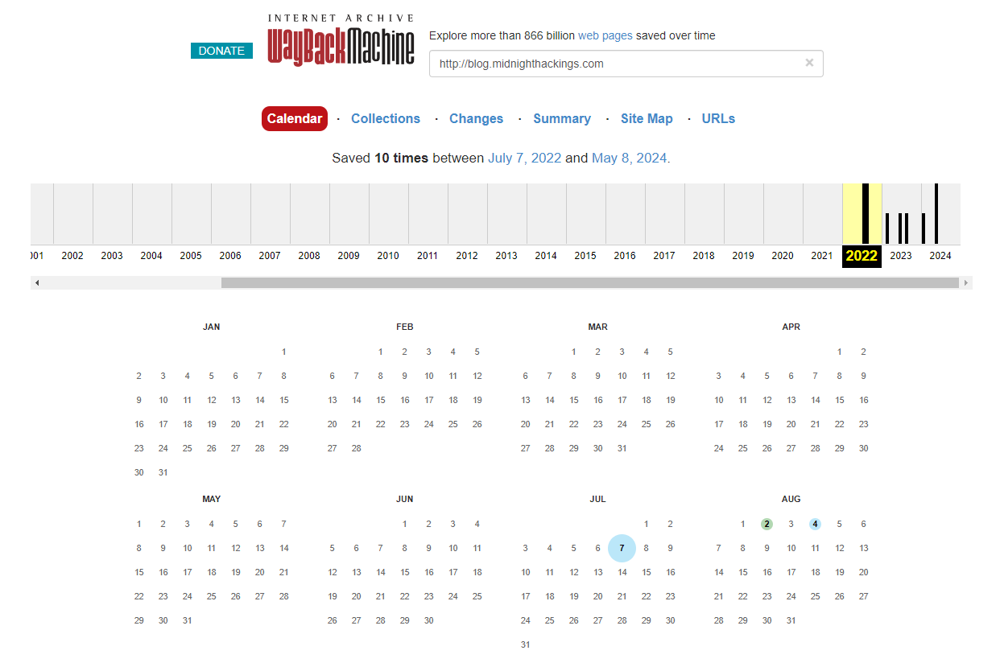Há snapshots do site no intervalo de 2022 a 2024. Selecionando o snapshot de 07 de julho de 2022, podemos ver o início do blog, com apenas um post e com um estilo totalmente diferente do atual.
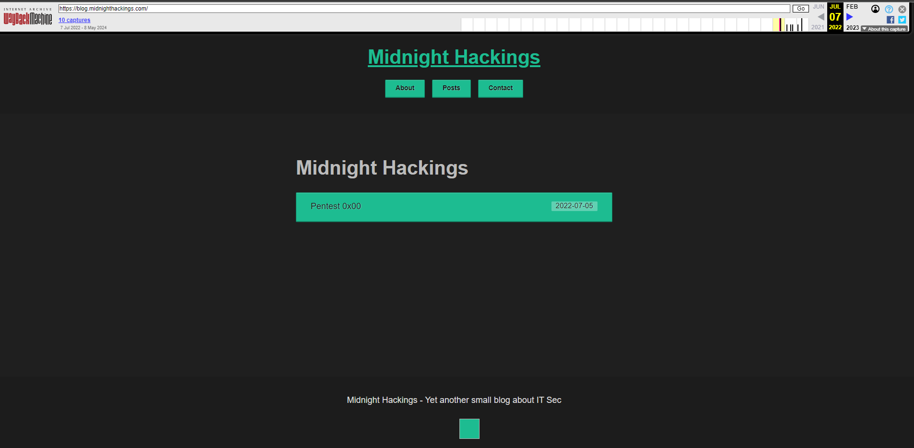Algumas vezes é possível encontrar informações importantes para o pentest, mas nesse site só podemos especular que ele deva ter sido criado por volta de 2022.
WAF#
Os WAFs são firewalls que protegem os sites contra requisições automáticas e maliciosas. Para isso, as requisições devem passar primeiro por ele, que irá redirecionar as requisições não maliciosas para o site verdadeiro.
Para um pentest, isso tem implicação em scanners específicos de HTTP, em que serão necessários configurações específicas para bypassar os WAFs. Muitos WAFs, como a Cloudflare, também escondem o IP real do cliente, mas caso seja possível descobri-lo de alguma forma, realizar scans pelo IP real pode realizar bypass do WAF.
Bem, e como identificar WAFs? As ferramentas já citadas podem dar uma noção, mas podemos interagir minimamente com o website para identificar assinaturas de WAFs. Para isso, utilizaremos a ferramenta wafw00f, disponível no kali.
O uso mais básico da ferramenta é passando o site diretamente via linha de comando. Veja os resultados para os sites que encontramos anteriormente:
-
blog.midnighthackings.com - Fastly WAF 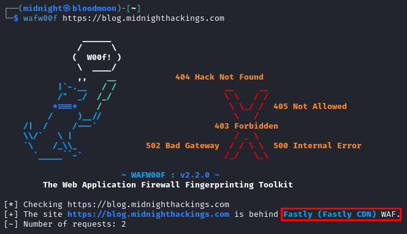
-
ctf.midnighthackings.com - Sem WAF 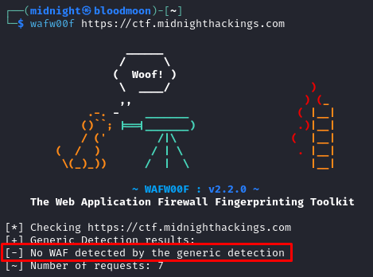
-
linux4hackers.midnighthackings.com - Cloudflare 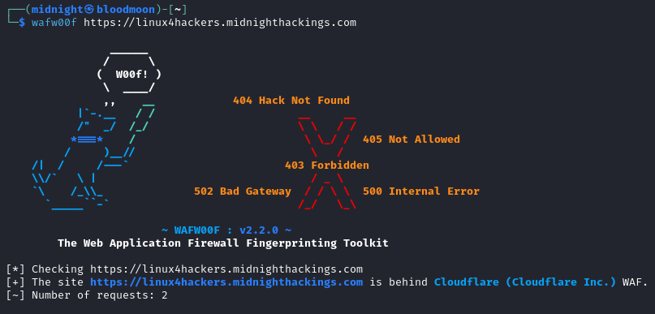
Google Hacking & GHDB#
Uma das ferramentas de Threat Intelligence que também é amplamente utilizada em pentest é o Google Hacking. Em resumo, é utilizar o Google Search ao nosso favor, fazendo pesquisas avançadas, com o uso de Dorks - termos especiais que permitem instruir o google a retornar coisas específicas sobre o alvo.
Dessa forma, é possível encontrar páginas “escondidas”, como painéis administrativos, diretórios de backup, diretórios com listagem aberta, entre outras falhas de configuração. Nesse artigo abordaremos apenas alguns exemplos, visto que é um assunto extenso, que garantiria um artigo inteiro sobre.
Para pesquisar sobre sites com possível vulnerabilidade de SQL Injection (ou até IDOR), podemos utilizar a dork inurl:.php?id=, que irá retornar sites que na URL (inurl) contenham uma página PHP (.php) e um parâmetro modificável via GET (?id=). Não se preocupe se não entender esse parágrafo, isso ficará mais claro nos artigos de vulnerabilidades web.
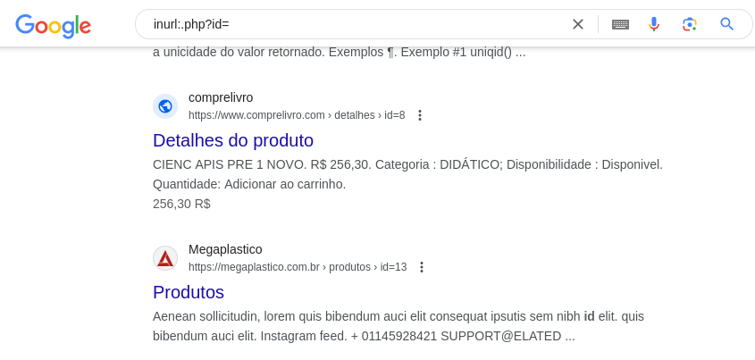Podemos pesquisar também por páginas de subdomínios via “site:*.dominio.com”:
Buscando por páginas com Directory Listing ativado - ou seja, é possível listar todo o conteúdo do diretório - via intitle:“index of”:
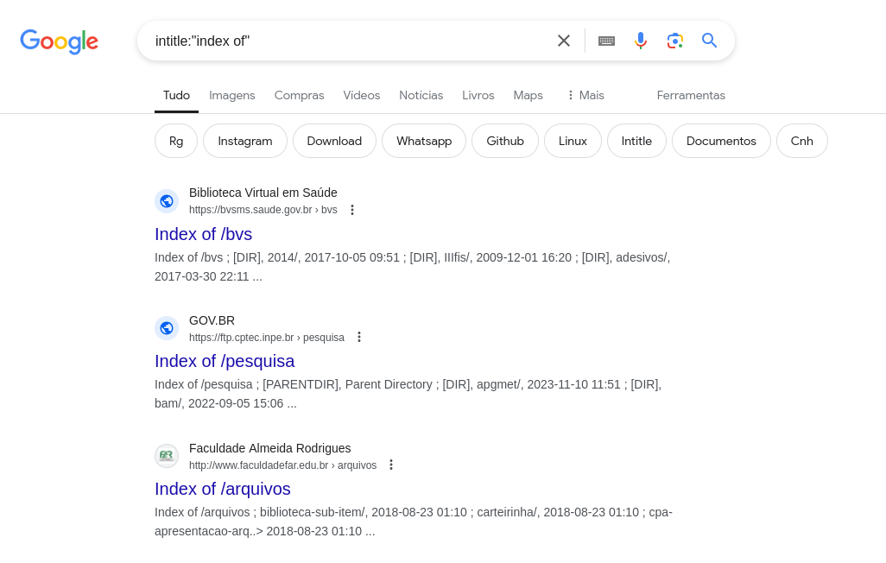Alguns outros dorks importantes para um pentest:
- filetype:pdf - páginas contendo arquivos de tipos específicos;
- cache:site.com - busca por versões em cache (mais antigas) do site no google. Nem sempre disponível.
GHDB & Dorksearch#
Foi criado, no Exploit DB, uma série de dorks a serem utilizadas para diversos fins. Dessa forma, pode não ser necessário criar uma dork do zero, mas sim alterar uma já existente que traz bons resultados:
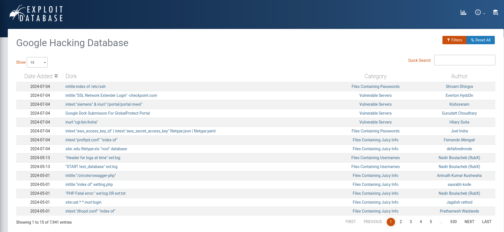Também há o site DorkSearch, que auxilia na montagem e pesquisa de dorks.
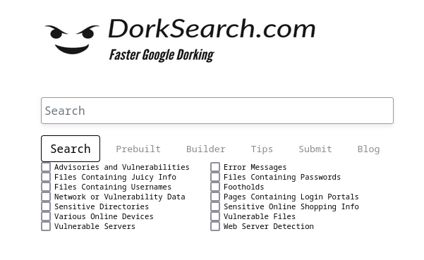Shodan#
Shodan é uma plataforma que realiza crawling em IPs públicos e descobre quais serviços estão rodando nesses IPs. É uma excelente fonte de informações passivas, trazendo até mesmo imagens dos serviços, acesso a câmeras via IP expostas sem autenticação e busca de vulnerabilidades nos serviços encontrados.
Entretanto, note que, como outras fontes de informações passivas, o resultado pode não refletir o estado atual do que está disponível.
No Shodan, a pesquisa é feita via filtros disponíveis na documentação. Assim como nas Dorks, é possível concatená-los para retornar resultados mais específicos. Alguns filtros importantes são:
- hostname:*.domain.com - pesquisa por hosts ligados ao domínio;
- net:10.0.0.0/24 - pesquisa por hosts ligados ao bloco de endereçõs CIDR;
- vuln:CVE-2017-0144 - pesquisa por hosts com determinada vulnerabilidade.
Abaixo estão alguns resultados do Shodan para os hosts ligados ao domínio midnighthackings.com:
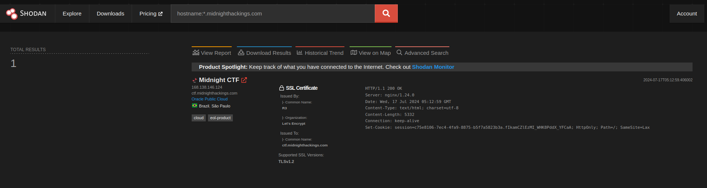É possível verificar que há 3 portas abertas, com os serviços de SSH, HTTP e HTTPS disponíveis. É feito um Banner Grabbing, técnica que veremos nos próximos artigos, para identificar o serviço rodando, retornando, inclusive sua versão.
Note que o serviço SSH está em uma versão mais atualizada que o que encontramos na etapa do DNSDumpster. Isso significa que o crawler do Shodan visitou o host mais recentemente que o DNSDumpster. Para termos mais certeza sobre a versão correta que está exposta, é importante seguir em um Banner Grabbing de forma ativa.
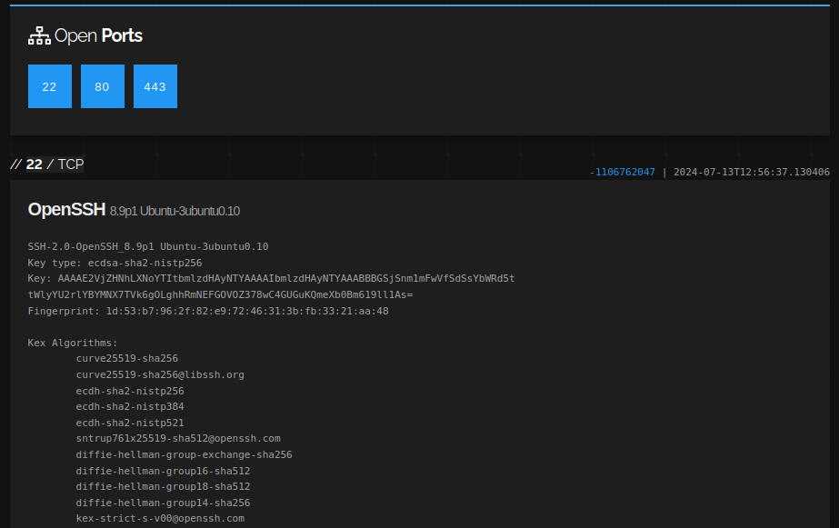No shodan, também é possível verificar os registros DNS e assim encontrar cada vez mais hosts e configurações atrelados ao domínio:
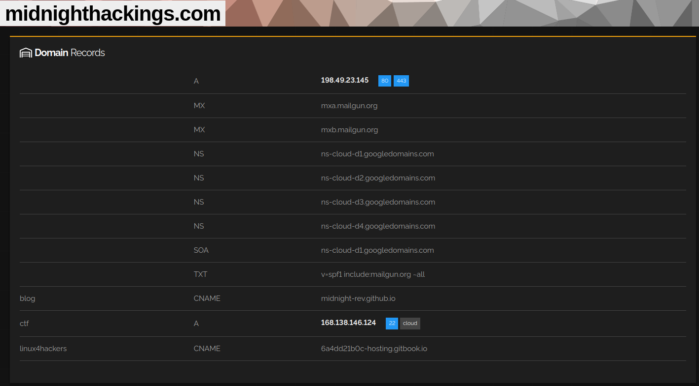Emails#
E-mails podem ser utilizados de mil maneiras diferentes em um pentest, logo, coletá-los é uma etapa essencial de todo pentest. Eles podem ser utilizados para phishing, busca de vazamentos de credenciais, brute-force, password-spray, entre outros tipos de ataque.
theHarverster#
theHarverster é uma ferramenta que utilizará o bing e outras search engines para buscar por e-mails de forma passiva, dado um domínio. Note que ele realizará múltiplas requisições e pode ser necessário limitar os resultados para que não haja um bloqueio por parte do provedor.
O uso mais comum é theHarverster -d domain.com -b bing, no qual a opção -d determinará o domínio a ser pesquisado e -b o provedor de busca.
No caso do midnighthackings.com via bing, o theHarverster não encontrou nenhuma e-mail associado. Porém, já temos e-mails obtidos das fases anteriores, e por isso é importante não confiar cegamente em apenas uma única ferramenta no pentest - busque por outras ferramentas, procure manualmente!
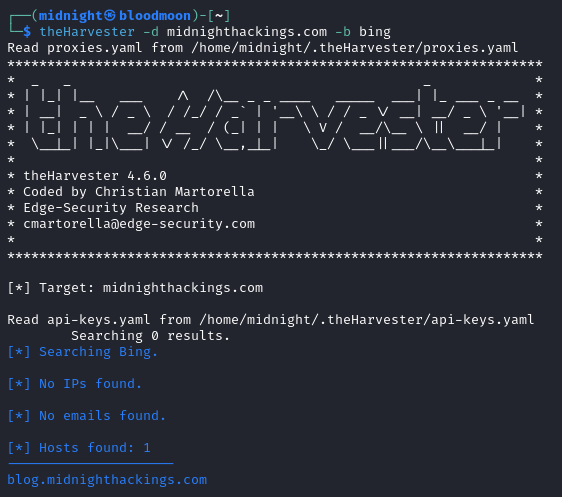Credenciais Vazadas#
Uma das fontes que atacantes e pentesters utilizam para realizar o acesso inicial na rede da empresa é através de uma conta legítima, válida, como um outlook, que tem uma senha vazada, reutilizada, e que não é atualizada há tempos.
Há diversos fóruns, canais de telegram e outras fontes que permitem realizar o download dessas bases de gigabytes de credenciais. Nesse artigo, trataremos apenas da ferramenta Have I Been Pwned, que realiza uma busca nas mais diversas bases de dados vazadas e indica se já houve algum vazamento de credenciais para aquele e-mail.
Para o e-mail que encontramos, midnight.reverser@outlook.com, não há vazamentos conhecidos (até agora!). Esse processo deve ser feito com todos os e-mails que foram encontrados, além de buscar as credenciais nas bases de dados e testá-las para acesso - tudo isso agrega qualidade ao relatório.
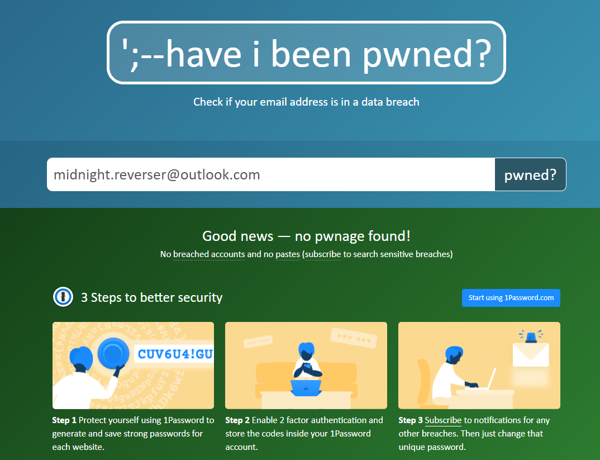Outros#
O mundo de busca de informações é imenso e não cobrimos 10% do que pode ser realizado de forma passiva. Desse modo, é importante que o leitor procure por si próprio, invista um tempo praticando e busque mais plataformas/ferramentas. Damos o pontapé inicial, agora é com você :)
Seguem algumas outras fontes que podem ser importantes para essa etapa:
- Github, Github Gist, Gitlab, repositórios
- Gitleaks, gitrob
- Sites de emprego
- Ferramenta Maltego
- OSINT Framework
- OSINT Brazuca